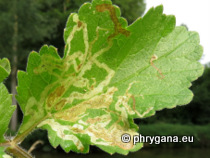

| Phrygana: la Nature en Crète principalement, mais aussi d'ailleurs ... |
|  |
|
|
| Phytomyza spondylii | Solanum tuberosum | Melampsora larici-populina |
| Espèces: 1242--- Faune: 500 -- Flora: 719 -- Galles (Bacteria): 2 -- Champignons: 20 -- Lichens: 1 | |||||
| Nouveautés | |||||
| Flora: | Mentha suaveolens | Fauna: | Phytomyza petoei | Flora: | Ailanthus altissima |
| Fungi: | Rhytisma acerinum | Flora: | Parthenocissus inserta | Flora: | Populus trichocarpa |
| Flora: | Aegopodium podagraria | Fauna: | Phytomyza podagrariae | Flora: | Zea mays |
| 18 décembre 2021 |